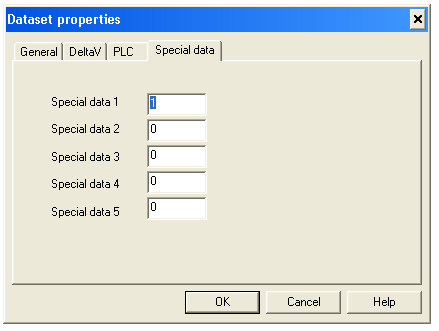

At this point you should have configured the serial cards, ports, devices, and datasets through the DeltaV tab of the Dataset Properties dialog.
Specify the Device data type.
Open the PLC tab of the dialog.
In this dialog you map DeltaV data types to PLC (or external device) data types.
In the Data start address field specify where in the PLC to read the data. This can be any PLC specific address.
Finally, open the Special data tab.

The Special data 1 value is used when transferring data for Floating point, signed 32-bit integer and unsigned 32-bit integer registers. The Special data 2 value is used to indicate the number of registers used for Floating point and 32-bit integer values. Details of Special data usage are provided below.
You can customize ModbusTCP communications and representation of data with the VIM firmware. Modification of data representation is typically only required when reading/writing Floating Point or Signed/Unsigned 32-bit Integer registers. However, in some cases, you may need to use Special data 1 for 16-bit byte swapping as well.
To customize data representation in a data set, you can use the Special data 1 and 2 registers as flags. To customize communications for a specific data set, the Special data 3 and 4 registers are used. This is described below.
Assume a Floating-point number 123.45, and its representation in IEEE 754 format as follows:
Floating-point number
Represented as 2 16-bit words
Represented as 4 bytes
123.45
58982, 17142
230, 102, 66, 246
Configure the remaining datasets the device requires.